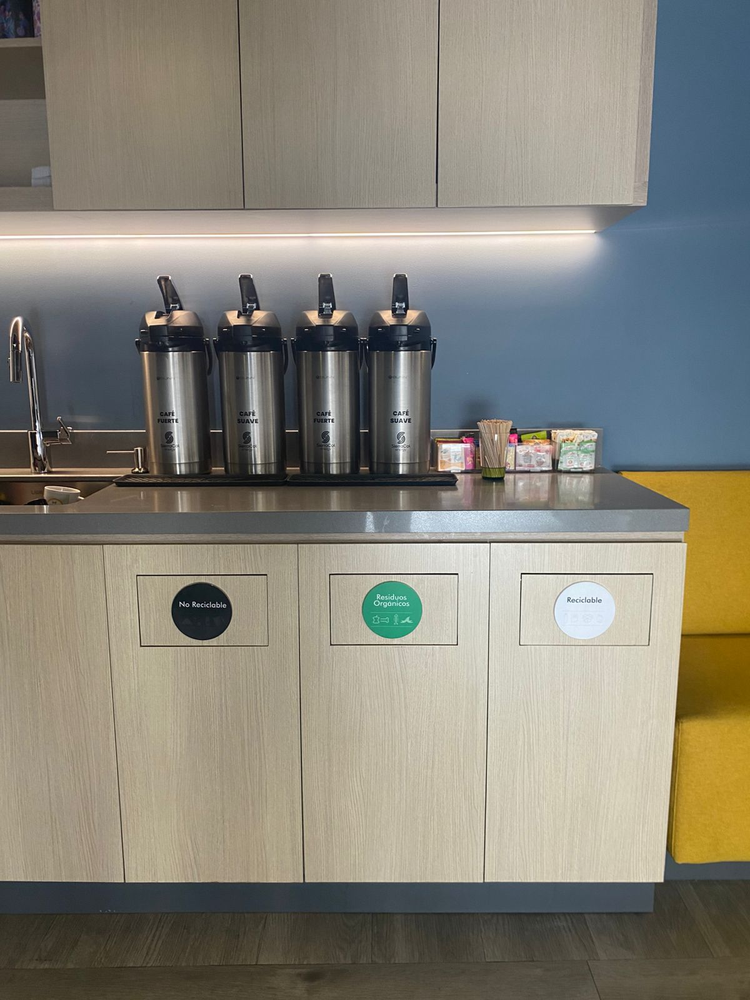

Bienvenid@ al módulo de inducción HSE para contratistas de SierraCol Energy en Bogotá (Torre Once 93).
En esta sesión, conocerás los principios esenciales de Salud, Seguridad y Medio Ambiente que guían nuestro trabajo diario en nuestras instalaciones administrativas en Bogotá.
Tu seguridad y bienestar son nuestra máxima prioridad; contamos contigo para mantener un entorno de trabajo seguro y saludable para todos.
A través de este módulo interactivo, adquirirás herramientas y conocimientos clave para desempeñarte de manera responsable en nuestras operaciones.
Gracias por unirte y por tu compromiso activo con una cultura de trabajo segura, responsable y enfocada en la protección de las personas, el ambiente y los activos.

¿Qué es el HES-MS?
Es el Sistema Integrado de Gestión de SierraCol Energy. Nuestro sistema está diseñado para mejorar la eficiencia y garantizar el cumplimiento de todos los requisitos legales y reglamentarios relacionados con la salud, el medio ambiente, la seguridad y la gestión de riesgos.
¿En qué se basa el HES-MS?
El sistema se basa en la norma IOGP 510 (Operating Management System Framework), que proporciona una guía para establecer y operar sistemas de gestión eficaces en la industria del petróleo y gas; también integra normas internacionales (ISO 45001 e ISO 14001) y todos los requisitos legales y reglamentarios aplicables en Colombia.

Estructura del HES-MS
Nuestra estructura está basada en un modelo circular centrado en 4 pilares: el liderazgo, la gestión de riesgos, la implementación y la mejora continua e integra 10 elementos fundamentales:

Propósito del HES-MS
Establecer un sistema de gestión sólido y colaborativo que garantice la seguridad, la responsabilidad ambiental y la excelencia operativa.
Beneficios del HES-MS
Procesos y procedimientos eficientes, actualizados y divulgados
Racionaliza esfuerzos y recursos
Adecuada gestión de riesgos
Eficiencia operativa
Cumplimiento legal
Ambiente de trabajo seguro
Integración de sistemas de gestión
Reducción de accidentes laborales
Mitigación de impactos ambientales
Mayor transparencia y colaboración
POLÍTICA INTEGRADA DE SEGURIDAD, SALUD EN EL TRABAJO, AMBIENTE, RESPONSABILIDAD SOCIAL Y MANEJO DE RIESGOS (HES-SR-RM)
La Política Integrada de Seguridad, Salud en el Trabajo, Ambiente, Responsabilidad Social y Manejo de Riesgos (HES-SR-RM) de SierraCol Energy establece el compromiso de la compañía con la protección de las personas, las comunidades, el medio ambiente, la biodiversidad y los activos de la organización, promoviendo operaciones seguras, responsables y sostenibles.
- La seguridad, la salud de las personas y la protección del medio ambiente tienen prioridad sobre cualquier objetivo operativo o comercial.
- Todos los trabajadores, contratistas y subcontratistas son responsables del autocuidado, del cumplimiento de los requisitos HES-SR-RM y del reporte oportuno de cualquier incumplimiento o condición de riesgo.
- La política aplica a todas las operaciones de exploración, explotación, transporte y comercialización de hidrocarburos, así como a las actividades desarrolladas por contratistas y socios operadores.
Proteger la vida, la salud y la seguridad de los trabajadores, contratistas, comunidades y demás grupos de interés.
Promover estilos de vida saludables y prevenir enfermedades cardiovasculares y enfermedades crónicas no transmisibles.
Cumplir la legislación vigente y los más altos estándares éticos en materia de seguridad, salud, ambiente, responsabilidad social y gestión de riesgos.
Identificar peligros, evaluar riesgos e implementar controles para prevenir incidentes, enfermedades, daños ambientales y afectaciones a las comunidades.
Respetar los Derechos Humanos, la cultura y las costumbres de las comunidades vecinas.
Mantener y mejorar continuamente el Sistema Integrado de Gestión (HESMS).
Aplicar la Autoridad de Parada (Stop Work Authority - SWA), permitiendo que cualquier trabajador detenga una actividad que considere insegura.
Estar preparados para responder eficazmente a emergencias mediante capacitación, simulacros y planes de respuesta.
Mantener una comunicación abierta y transparente con trabajadores, comunidades, autoridades y demás grupos de interés.
Integrar la gestión de riesgos HES-SR-RM en todas las decisiones, procesos y actividades del negocio.
Seleccionar contratistas y proveedores comprometidos con altos estándares de seguridad, ambiente y responsabilidad social.
Fomentar la participación, capacitación y desarrollo de competencias en prevención de riesgos.
Promover relaciones positivas con las comunidades y favorecer el empleo y la contratación local.
Operar de manera sostenible mediante la gestión eficiente de recursos naturales, la prevención de la contaminación, la reducción de emisiones y la adaptación al cambio climático.
Proteger la biodiversidad, evitar impactos innecesarios sobre ecosistemas sensibles y rehabilitar las áreas intervenidas al finalizar las operaciones.
Considerar las opiniones y expectativas de las comunidades y demás grupos de interés en la gestión de las operaciones.
POLÍTICA DE SEGURIDAD VIAL
La Política de Seguridad Vial de SierraCol Energy establece el compromiso de la compañía con la conducción segura, la prevención de accidentes de tránsito y el cumplimiento de la normativa vigente, con el fin de proteger a las personas, las comunidades, los bienes y el medio ambiente.
Aplica a todos los trabajadores, contratistas, subcontratistas, conductores y procesos relacionados con el transporte de personal, equipos y materiales en las operaciones de la compañía, incluyendo los desplazamientos hacia y desde el trabajo.
Busca promover una cultura de seguridad vial basada en la prevención de riesgos, la mejora continua y la adopción de buenas prácticas de conducción.
La compañía realiza verificaciones periódicas del estado mecánico de los vehículos y de la documentación requerida para su operación.
Está estrictamente prohibido conducir bajo los efectos del alcohol o sustancias psicoactivas, en concordancia con la Política de Alcohol y Drogas.
Se desarrollan programas permanentes de capacitación y sensibilización para fortalecer las competencias de los actores viales.
Se implementan medidas para prevenir la fatiga, garantizando tiempos adecuados de descanso y controlando las horas de conducción.
Es obligatorio el uso del cinturón de seguridad por parte de conductores y pasajeros en todos los vehículos de la operación.
Está prohibido utilizar teléfonos celulares o radios de comunicación mientras el vehículo se encuentra en movimiento. Cualquier comunicación debe realizarse únicamente cuando el vehículo esté detenido en un lugar seguro.
La compañía mantiene la señalización y los dispositivos de seguridad necesarios en vías internas, zonas de cargue, descargue y parqueaderos para prevenir incidentes.
Se realiza seguimiento continuo al desempeño del Plan Estratégico de Seguridad Vial para identificar oportunidades de mejora y asegurar el cumplimiento de los requisitos legales.
POLÍTICA DE ALCOHOL Y DROGAS
La Política de Alcohol y Drogas de SierraCol Energy tiene como objetivo garantizar un ambiente de trabajo seguro, saludable y libre de sustancias que puedan afectar el desempeño laboral, la seguridad de las personas, el medio ambiente y los activos de la compañía.
Aplica a todos los empleados, contratistas y visitantes que desarrollen actividades en instalaciones o proyectos de la compañía.
Está prohibido el uso, posesión, compra, venta o distribución de alcohol y drogas no autorizadas durante el trabajo o dentro de las instalaciones de la empresa.
No se permite presentarse o trabajar bajo los efectos del alcohol, drogas ilícitas o medicamentos que puedan afectar la capacidad para realizar las labores de forma segura.
El uso de marihuana, incluso cuando sea prescrita médicamente o legal en determinados lugares, constituye una violación de la política y descalifica al trabajador para desempeñar sus funciones.
Los empleados pueden ser sometidos a pruebas de alcohol y drogas en las siguientes situaciones:
Antes de la contratación.
Después de incidentes o accidentes.
Por sospecha razonable.
Después de procesos de rehabilitación.
Al regresar al trabajo.
De manera aleatoria.
La negativa a realizarse una prueba, la adulteración o sustitución de muestras, o cualquier intento de interferir con el proceso de control, se considera una infracción grave y puede generar medidas disciplinarias, incluido el despido.
Los resultados positivos en pruebas de alcohol o drogas pueden dar lugar a sanciones disciplinarias que incluyen la terminación del contrato.
La compañía reconoce que la dependencia al alcohol y las drogas es una condición tratable y promueve la búsqueda voluntaria de ayuda profesional a través del Sistema de Gestión de Seguridad y Salud en el Trabajo (SG-SST).
El incumplimiento de esta política puede generar acciones disciplinarias y, cuando corresponda, ser reportado a las autoridades competentes.
REGLAMENTO DE HIGIENE Y SEGURIDAD INDUSTRIAL
El reglamento de Higiene y Seguridad Industrial tiene como propósito principal establecer normas y procedimientos para asegurar un entorno de trabajo seguro y saludable.
También establece el compromiso de la alta dirección para implementar medidas de control a los peligros identificados.
Lo puedes encontrar publicado en las carteleras digitales, CDT&A y en las cafeterías de cada piso.

Haz clic en cada uno de los conceptos clave para conocer sus definiciones, ejemplos y controles asociados:
Definición: Cualquier fuente, situación o acto con el potencial de causar daño a la salud de los trabajadores, a los equipos o las instalaciones. El peligro se compone de los siguientes elementos:
Elementos del Peligro:
Elemento o condición con energía propia (ejemplo: maquinaria, electricidad, ruido, sustancias químicas, etc.).

Entorno o circunstancia que propicia un accidente (ejemplo: pisos resbaladizos, lluvia, etc.).

Comportamiento inseguro del trabajador (ejemplo: usar el celular mientras conduce, no usar elementos de protección personal, etc.).

¿A qué peligros estamos expuestos en las instalaciones administrativas de SierraCol Energy?
Posturas inadecuadas, movimientos repetitivos, levantamiento incorrecto de cargas, posturas forzadas.

Jornada laboral, carga excesiva de trabajo, fatiga, mala organización del tiempo, acoso laboral.

Piso húmedo, falta de orden y aseo, escaleras, desniveles.

Ruido, iluminación.

Uso incorrecto de herramientas o equipos, herramientas o equipos defectuosos.

Virus y bacterias.

🛡️ Controles para los peligros (Torre Once 93)
Los controles son medidas que se utilizan para eliminar, sustituir o disminuir la probabilidad de que el peligro se materialice. Para los peligros a los cuales estamos expuestos en la Torre Once 93, podemos aplicar estos controles:
- Postura prolongada y movimientos repetitivos: Realiza pausas activas por lo menos 2 veces al día. Recuerda participar en las pausas activas programadas por SierraCol Energy.
- Levantamiento incorrecto de cargas: Recuerda levantar las cargas doblando las rodillas, haciendo la fuerza con las piernas y manteniendo la espalda recta.
- Posturas forzadas: Limita el tiempo de las posturas forzadas. Por ejemplo, si debes realizar una actividad que implica mantener los brazos levantados por encima de la línea de los hombros, debes hacerlo máximo por 2 horas.
- Carga de trabajo y mala organización del tiempo: Prioriza tus actividades y utiliza herramientas como Copilot para agilizar tus actividades.
- Fatiga: Realiza pausas activas mentales.
- Acoso laboral: Puedes acudir al comité de convivencia laboral o al área de PCM para que te orienten.
- Piso húmedo: Respeta la señalización de piso húmedo y transita con cuidado. Si ves un piso húmedo sin señalizar, informa al área HES.
- Falta de orden y aseo: Evita obstruir pasillos, escaleras o equipos de emergencia, mantén tu puesto de trabajo en orden, desciende/asciende por las escaleras utilizando el pasamanos y no mires el celular mientras estás caminando.
- Ruido: Limitar el uso de audífonos.
- Iluminación: Verificar que el nivel de iluminación de tu puesto de trabajo sea adecuado (ni excesivo ni deficiente).
- Herramientas defectuosas: Evita utilizar herramientas en mal estado y notifica a tu empresa.
- Uso incorrecto de herramientas: Usa las herramientas solo para lo que están diseñadas.
- Elementos de protección: Usa elementos de protección personal.
- Virus y bacterias: Lavarse las manos continuamente y utilizar tapabocas en la oficina si tú o tus familiares tienen síntomas de gripe.
Ahora que ya conoces el concepto de peligro, vamos a conocer el concepto de riesgo: ⚡
Definición: El riesgo es la probabilidad de que el peligro se materialice y cause una lesión, junto con la gravedad de esta.

Al aplicar controles sobre el peligro, estamos disminuyendo el RIESGO de que ocurra un accidente
¡Es deber de todos en la empresa aportar para que el riesgo disminuya y así el peligro no se materialice generando un casi accidente, o en el peor de los casos, un accidente! 🚨
Definición: Zona o trayectoria física donde una persona se expone a sufrir lesiones debido a la liberación de energía, movimiento de equipos o caída de objetos.

Ejemplo: Ubicarse debajo de una carga suspendida por una grúa o detrás de un vehículo en reversa.
Como lo veíamos en el concepto de peligro, este tiene 3 elementos que lo componen: fuente, situación o acto. En el caso de la Situación, nos encontramos con las CONDICIONES INSEGURAS. 🛠️
¿Qué es una condición insegura?
Una condición insegura es cualquier situación o estado físico, material o ambiental en el lugar de trabajo que representa un peligro latente. Estas deficiencias pueden desencadenar un accidente, una enfermedad laboral o daños materiales si no se corrigen. ⚠️
EJEMPLOS DE CONDICIONES INSEGURAS:
Pisos resbaladizos, escaleras sin pasamanos. 🛗

Iluminación deficiente o falta de ventilación, cables eléctricos expuestos o herramientas en mal estado. 🔌

Pasillos obstruidos, acumulación de desechos o almacenamiento incorrecto de sustancias químicas. 🧪

- 📢 Notificar inmediatamente al área HSE o a tu supervisor a cargo.
- ✔️ Si está dentro de tus posibilidades y cuentas con la capacitación necesaria, elimina el peligro (ejemplo: señalizar una zona húmeda, almacenar correctamente las sustancias químicas de acuerdo a su compatibilidad).
En el caso de la parte de Acto, nos encontramos con los ACTOS INSEGUROS: 🚫
¿Qué es un acto inseguro?
Un acto inseguro es toda acción o decisión humana que incumple normas o procedimientos, aumentando la probabilidad de sufrir un accidente laboral o una enfermedad. Suele originarse por exceso de confianza, afán de ahorrar tiempo o falta de capacitación. ⚠️
Ejemplos de actos inseguros:
No usar el equipo de protección personal (EPP) adecuado.

Operar maquinaria o vehículos sin autorización o a velocidades inadecuadas.

Bloquear pasillos o salidas de emergencia.

Para evitar que realices actos inseguros durante tu trabajo, te recomendamos analizar cada una de las actividades que realizas, qué peligros implican y qué controles puedes aplicar para los peligros. Al tener consciencia de qué controles debes aplicar, es muy probable que no realices actos inseguros.
✋ Detener la actividad: Si en algún momento de tus actividades laborales consideras que las estás realizando de forma insegura, te invitamos a detener la actividad, a verificar qué controles estás aplicando e iniciar nuevamente la actividad aplicando todos los controles necesarios.
🤝 Intervención respetuosa: En caso de ver a un compañero de trabajo realizando un acto inseguro, te invitamos a acercarte a él y de forma respetuosa mencionarle que está realizando la actividad de forma insegura y qué controles puede aplicar. En caso de que el compañero haga caso omiso a tus recomendaciones, te invitamos a hacer el reporte ante el área HES.
Al reportar que tu compañero está realizando actos inseguros, estás ayudando a salvaguardar su salud y su vida. Es preferible reportar y evitar que el compañero tenga un accidente, a mantenernos callados y posteriormente ver las consecuencias de este acto inseguro.
También recuerda que si tu compañero te reporta, no lo hace con el objetivo de hacerte daño o molestarte, lo hace con el objetivo de salvaguardar tu vida. ❤️
Definición: Evento repentino en el trabajo que tuvo el potencial de causar lesiones, pero que no resultó en daños o heridas corporales (casi-accidente).

Ejemplo: Resbalar en un piso húmedo pero lograr sostenerse sin caer y sin sufrir ninguna lesión.
Definición: Suceso repentino por causa o con ocasión del trabajo, que produce en el trabajador una lesión orgánica, perturbación funcional, invalidez o muerte.

Ejemplo: Sufrir una fractura al caer de una escalera por falta de pasamanos o por pisar una superficie húmeda.
Definición: Estado patológico contraído como resultado directo de la exposición a factores de riesgo inherentes a la actividad laboral o del medio en el que se trabaja.

Ejemplo: Contraer túnel carpiano debido al uso repetitivo y prolongado del mouse sin pausas activas ni soporte ergonómico.
El programa de disciplina operativa de SierraCol Energy está enfocado en tener altos estándares de desempeño, mediante el cumplimiento estricto de procedimientos y asegurando que todas las actividades se realicen consistentemente, de forma segura y eficiente, con el fin de eliminar las lesiones y los incidentes de proceso. 🛡️
Objetivos del programa de disciplina operativa


La "Autorización para Salvar Vidas" aplica a todas las operaciones de SierraCol Energy. Esta autorización te permite detener trabajos cuando consideres que las condiciones bajo las que se está desarrollando son inseguras o puedan resultar en un efecto adverso para las personas, las instalaciones, el proceso, el medio ambiente y las comunidades vecinas.
"Ningún empleado directo, de contratista o subcontratistas, podrá ser sujeto a sanciones disciplinarias por detener cualquier trabajo, que de buena fe han considerado inseguro."
Sin importar cuál sea el trabajo, se debe detener cuando se presente alguna de las siguientes situaciones:
Condiciones o actuaciones inseguras
Ocurrencia de incidentes
Cuasi accidentes
Situaciones de emergencia
Cambio de condiciones originales del trabajo - Cambio del plan de trabajo
Ausencia y/o falta de claridad en el procedimiento y/o instrucción de trabajo
Falta de Planeación (Deficiencia Análisis de Riesgos - Permiso de Trabajo)
Ausencia de barreras y controles efectivos para mitigar el peligro
Equipos o herramientas defectuosos
Exposición en la línea de peligro
Es tu derecho y tu deber detener el trabajo cuando un acto o condición insegura pueda generar un evento indeseado.
Ahora que conoces los conceptos de acto inseguro, condición insegura y casi-accidente, te invitamos a reportar estos eventos a través de nuestro código QR o a través de Nuestro Espacio en el link Reporte Aquí. 📝
Reportar por Código QR
Escanea el código QR con la cámara de tu celular para acceder directamente al formulario de registro HES de SierraCol Energy desde tu dispositivo móvil.

Reportar por Nuestro Espacio
Ingresa al portal corporativo Nuestro Espacio (Intranet) y, en la sección de Enlaces rápidos, haz clic en el enlace "Reporte aquí Observaciones de Comportamiento, Condiciones...".

En caso de que tú o un compañero hayan presentado un accidente de trabajo o una emergencia médica, debes seguir de forma estricta los siguientes pasos: 🚑
Paso 1: Notificar al Brigadista
Reporta al brigadista de tu piso inmediatamente sobre el accidente ocurrido.
Paso 2: Traslado al Consultorio
Dirígete hacia el consultorio médico ubicado en el piso 4. Si es necesario, solicita ayuda al brigadista para trasladarte o trasladar a tu compañero hasta este punto.
Paso 3: Valoración Médica
En el consultorio médico se realizará una valoración del evento y se determinará si es necesario realizar traslado a un centro médico especializado. Permite que el profesional médico realice la valoración necesaria.
Paso 4: Traslado de Emergencia
En caso de ser necesario el traslado a un centro médico, se utilizará el convenio de área protegida con Coomeva. Permite que se realice el traslado a través de este medio.
Paso 5: Desfibrilador Automático (DEA)
En caso de ser necesario, la brigada de emergencias y el personal médico procederán a utilizar el desfibrilador electrónico automático (DEA) para atender la emergencia vital.
Paso 6: Reporte a ARL
Finalmente, en caso de accidente de trabajo, reporta a tu empresa contratista para que este evento sea formalizado y reportado formalmente ante la ARL.
Protocolo de Emergencias en Bogotá
Para reporte de emergencias en Bogotá, dirígete al brigadista asignado en tu piso. En caso de que no se encuentre, comunícate a las líneas de emergencias que te presentamos a continuación. Una vez se reciba el reporte de la emergencia, el Command Center activará los grupos y equipos necesarios para afrontar la emergencia.
Directorio Telefónico de Emergencias
Línea de atención de emergencias – Command Center
Principal
Líder Médico

Coordinador HES

Líder Brigada de Emergencias

Coordinador Operativo de Mantenimiento

Emergencias Médicas Coomeva
Área Protegida
En SierraCol Energy tenemos establecido un programa de gestión de residuos para la torre Once 93. A continuación, te presentamos el código de colores establecido en los puntos ecológicos ubicados en todos los pisos de la torre, para que dispongas de tus residuos de acuerdo con el tipo de residuo y color de la caneca: ♻️
Cáscaras de frutas, restos de comida, hojarasca.

Plástico limpio, cartón, papel, vidrio y metales.

Servilletas sucias, paquetes de comida, cartón, papel o icopor impregnado de comida, residuos de barrido.

Agujas, jeringas, tapabocas, guantes de laboratorio, residuos de baño.


Antes de desechar un residuo, define qué tipo de residuo es y en qué caneca lo debes disponer. Tus acciones ayudan al medio ambiente.
A continuación te presentamos tus responsabilidades en temas de seguridad y salud en el trabajo:
Participar y contribuir al cumplimiento de los objetivos de seguridad y salud en el trabajo

Suministrar información clara, veraz y completa de tu estado de salud

Participar en las actividades de capacitación y salud realizadas por SierraCol Energy y tu empresa

Procurar el cuidado integral de tu salud

Cumplir las normas, reglamentos e instrucciones de seguridad y salud en el trabajo

Informar oportunamente acerca de peligros y riesgos en el trabajo

Ahora, te presentamos tus responsabilidades en temas ambientales:
Propender por el cuidado del medio ambiente

Cumplir con las normas, permisos y licencias establecidas para las diferentes operaciones de SierraCol Energy.

Reportar oportunamente situaciones que puedan generar impactos ambientales en tu sitio de trabajo o durante la realización de tus actividades

Cumplir el procedimiento para manejo de residuos sólidos (puntos ecológicos y código de colores)

Conocer y aplicar en tu área lo establecido en las fichas del plan de manejo ambiental

Participar y contribuir al cumplimiento de los objetivos ambientales y los programas de gestión

Has completado todos los módulos teóricos de la inducción HES de SierraCol Energy.
Para certificar tu participación, debes responder este breve cuestionario sobre los conceptos clave presentados.